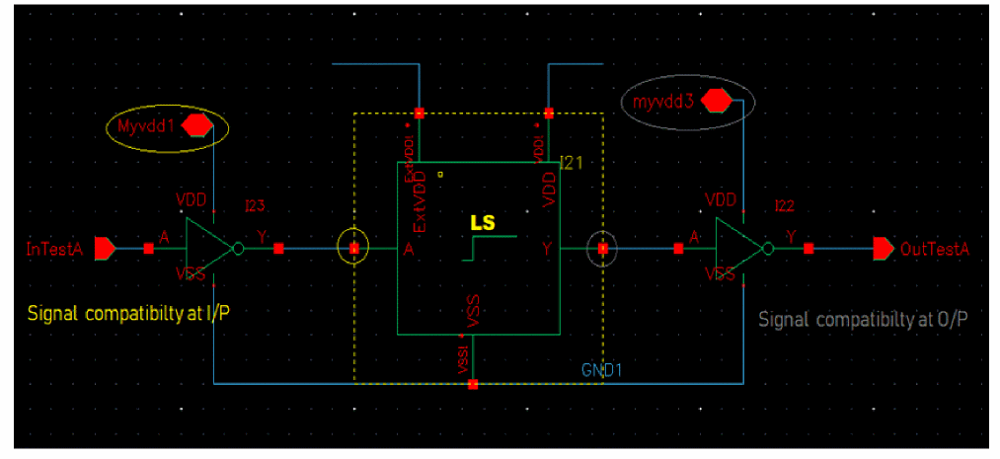

5
Running In-Design Checks
The In-Design Checks aim to provide hints to designers for multiple design guidelines or checks and helps in improving the efficiency of the design development cycle. Such checks help checking complex mixed-signal designs that have multiple voltage islands, an increased fusion of analog and digital blocks, more interfaces to check within analog blocks, an increased use of complex power distribution, different modes for achieving power savings, and the use of third-party IPs in various forms. You can also generate signal information for the design, which can be used as a good debugging aid to analyze different power domain crossings in a design.
In-Design checks can be run on any physical design schematic having complete power connectivity. Designs that have the power connectivity introduced post the 1801 Import flow are also suitable candidates for running In-Design checks.
The chapter includes the following sections:
Defining the Severity of Design Checks
Power Manager through its In-Design checking functionality performs various static low power structural checks for level shifters and isolation cells. It also aids in checking for invalid connectivity of bulk node for transistors used in the design by performing the bulk checks.
To define the severity for the checks:
- On the In-Design Checks tab of the Power Manager Setup form, select the Level Shifter or Isolation tab.
-
Specify the severity level for various low power checks in the Severity section.
The In-Design Checks functionality includes the following structural checks:
- Low power checks
- Bulk Checks
Level Shifter Checks
The following checks are performed for various types of level shifters in a design.
-
Missing level shifters check
Checks all the data connections for voltage compatibility. If the voltage values for driver and receiver are not compatible, an error is generated. In this check, the type of missing level shifter (high-to-low or low-to-high) is reported. The driver supplies might be MOS drain terminals, standard cell output, or output macro domain ports. Loads can be MOS gate terminals, standard cell input, or macro domain ports. In addition, domain crossings operating at different voltages without level shifters are reported in one of the following scenarios:- The driver power voltage is less than the receiver power voltage by the lower bound input voltage tolerance.
- The driver power voltage is more than the receiver power voltage by the upper bound input voltage tolerance.
- The driver ground voltage is less than the receiver ground voltage by the lower bound ground input voltage tolerance.
-
The driver ground voltage is more than the receiver ground voltage by the upper bound ground input voltage tolerance.
You can define the lower and upper tolerance values for input and input ground voltages in the Tolerance section.
The default value of the lower limit of the input power and input ground voltage is-0.10. It should be less than or equal to0.
The default value of the upper limit of the input power voltage and input ground voltage is0.10. It should be greater than or equal to0.
The missing level shifter check also supports the following:
- User-defined Port Attributes Registration for checking the boundary ports.
- Supply States for explicit voltage values.
-
Incompatible level shifters check
In this check, all domain crossings at different operating voltages are checked for the level shifters voltage ranges. An error is reported if operating voltages are found incompatible, for example, high level shifters in a low-to-high crossing or conversely.
Incompatibility in operating voltages can arise due to the following:-
Voltage levels of signals
This checks for incompatible driver or receiver for a data pin with respect to input or output supply voltage range for a level shifter. -
Voltage levels of supply
This checks for incompatibility of level shifter supplies with respect to the input or output voltage range supported by the level shifter.

-
Voltage levels of signals
-
Redundant level shifters check
All domain crossings with level shifters at the same operating voltages are reported. In addition, the domain crossings at the macro boundary with a redundant level shifter are reported.
-
Protected level shifters check
The data is protected by using an enable signal. The protected level shifters in design along with their enable condition are highlighted.
-
Unprotected level shifters check
An unprotected dual rail level shifter is reported when all the following conditions are true: -
Floating level shifters check
The floating level shifters have their enable signal evaluated as floating. During the check, the level shifter is reported if its enable input can be traced to a floating value.
-
Always enabled level shifters check
This check highlights the level shifters that have the enable pin tied to a fixed supply voltage and therefore, the state of the level shifter never changes. It keeps the data output always clamped.
-
Unused enable level shifters check
This check highlights a level shifter that has the enable pin tied to a fixed supply voltage of opposite polarity. In this case, the enable pin is not used effectively.The unused enable level shifters have an enable signal tied to a fixed voltage and data output is never clamped.
Isolation Checks
-
Missing isolation check
Reports all domain crossing involving at least one switchable domain and another switchable or always on domain without isolation. The driver supply could be MOS drain terminals, standard cell output, or output macro domain ports. Similarly, load could be MOS gate terminals, standard cell input, or macro domain ports.
-
Incompatible isolation check
Checks the isolation cell for compatibility with the enable pin or supply connection while ensuring that the power shutoff domain has been isolated from functional logic. If the supply for the driver or receiver node is incompatible, an error is flagged. In various user-defined supply states of externally shut-off conditions, it reports if the voltage exists in all the data connections. -
Redundant isolation check
Reports an error if the driver and receiver of an isolation cell are switched on and off simultaneously or they are never turned off. This helps in optimizing the design area and power by indicating the redundant circuit elements.
Bulk Checks
The incompatible bulk check flags transistors, which have the bulk terminal-related supply incompatible with the related supply of its source or drain terminal.
- For a P-type transistor, a violation is reported in the following scenarios:
- For an N-type transistor, a violation is reported in the following scenarios:
Running Checks
This topic explains running certain checks while designing, loading violations, and analyzing the reported errors in the Annotation Browser. You can browse and review the errors. The cross-highlighting enables to view the errors in the schematic.
Checking a Design
To run the In-Design Checks, perform the following steps:
- Load the setup in the Power Manager Setup form.
-
Choose Power Manager – Run In-Design Checks.
AninDesign.logfile, such as the one shown here, appears.
Loading the Violations Database
The errors generated are cross-probed to the accurate schematic location to enable the editing and correction. To load the violations database, perform the following steps:
-
Choose Power Manager – Load Violations.
-
Specify the file name and click OK. The Annotation Browser displays the violations in the design.
-
Specify the scope of the violations, which is based on the cellview hierarchy, to be displayed in the Annotation Browser.
Filtering Violations
You can add the filter patterns to waive off violations in the Filters field on the Runs In-Design Checks tab of the Power Manager Setup form. These indicate the permissive deviations in the design. The tool filters the errors messages or violations matching the pattern specified in the Filters field. The Annotation Browser does not display the filtered violations. All matching violations are reported as the filtered messages in the In-Design Checks Report. See In-Design Checks.
Generating Signal Information
You can assign the voltage information to each design net based on the possible voltage values defined in the Signal Information Report that the net can have under multiple design conditions.
To generate the signal information report:
- Load the setup file. The setup file is needed for identifying the design elements and registering voltage values for different nets.
-
Choose Power Manager – Generate Signal Info. Alternatively, use vpmGenerateSigInfo. The Signal Information Report is created.

Return to top